分类与叠加
伤害修正之间是相乘关系，乘的顺序不影响结果，能挂多少条就挂多少条。只有提高近战伤害的那些修正互相之间是相加。
同一类之内不叠加，取最高的一条生效；跨类之间照常相乘。所以配装的收益来自「每一类各拿一条最高的」，而不是同一类里堆两三条。
| 类别 | 说明 | 来源 | 叠加规则 |
|---|---|---|---|
| 全局易伤 | 由施加到目标身上的减益，目标可以是战斗人员，也可以是敌方 | 虚空沙盒、部分异域武器与护甲、神器模组 | 与其它全局易伤不叠加，取最高 |
| 强化增益 | 直接施加到身上的增益，来自自己或盟友 | 烈日沙盒、部分异域装备与超能技能、突袭模组、神器模组 | 与其它强化增益不叠加，取最高 |
| 武器激涌 | 直接施加到身上、走「护甲激涌」那套系统的增益 | 护甲充能系统、异域护甲、神器模组 | 与其它武器激涌不叠加，取最高 |
| 放大类增益 | 直接施加到武器或技能上、既不属于易伤也不属于强化与激涌的增益 | 武器模组、星相与碎片、神器模组 | 与所有增益叠加，自身也可叠加 |
| 异域固有 | 异域装备自带的、直接作用于武器或技能的效果 | 多数异域武器与异域护甲 | 与所有增益叠加，自身也可叠加 |
| 武器 Perk | 触发后为该武器开启一项修正 | 武器 Perk 与起源特性 | 与所有增益叠加，自身也可叠加 |
| 世界与活动 | 由活动本身给出的修正 | 世界沙盒、活动修正词条、突袭与地牢的遭遇战增益 | 与所有增益叠加，自身也可叠加 |
本页详列前四类，另加世界与活动共五类。异域固有与武器 Perk 两类只有示例清单、没有逐条数值，故只留在上表的规则里。
全局易伤
30% 那一档的三个来源（邪冬的头盔、法夫纳、牵引器火炮）的持续时间可以被多数虚弱来源续期，续到新来源本身消失为止，可以无限重复；暗影箭矢那两条另成一档，不吃这条续期。
| 名称 | 图标 | 来源 | 触发 | 增伤 | 时长 | 注解 |
|---|---|---|---|---|---|---|
| 强力虚弱 | ||||||
| 暗影箭矢：狩猎陷阱 | 虚空猎人超能 | 陷落锚束缚到目标 | 35%[50%] | 随超能持续 | 时长按实时被束缚的战斗人员数量浮动，比莫比乌斯箭袋长。 不能被虚弱效果延长。 | |
| 暗影箭矢：莫比乌斯箭袋 | 虚空猎人超能 | 莫比乌斯锚束缚到目标 | 30%[50%] | 随超能持续 | 时长按实时被束缚的战斗人员数量浮动，比狩猎陷阱短。 不能被虚弱效果延长。 | |
| 邪冬的头盔 | 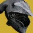 | 术士头盔 | 充能近战击杀或终结技释放一团虚空能量 | 30%[30%] | 见注解 | 半径与时长按目标档位： 战斗人员：充能近战 ｜ 终结技 15m 10s ｜ 20m 15s 20m 15s ｜ 25m 20s 及以上 25m 20s ｜ 25m 20s 可自我续期，也可被任意虚弱效果延长。 守护者算橙血；首领与守护者都无法被终结。 |
| 法夫纳 | 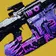 | 威能线性融合步枪 | 触发量子新星，10 米内施加虚弱；量子新星激活期间命中再施加一份 | 30%[30%] | 5 秒[5 秒] | 量子新星按开火消耗的备弹给时长： 1 发 4 秒 ｜ 3 发 8 秒 ｜ 6 发 14 秒 ｜ 9 发 20 秒 触发时一并填满弹匣，收枪期间计时暂停，重新触发可续期。 触发瞬间造成 1420 伤害，并在 10 米内施加这份虚弱，与消耗的备弹量无关。 虚弱可自我续期，也可被任意虚弱效果延长。 |
| 牵引器火炮 | 威能霰弹枪 | 命中造成伤害 | 30%[50%] | 10 秒[10 秒] | 对全部元素与动能一视同仁，「对虚空伤害额外加成」在暗影要塞时期就已移除。 同时施加压制，可自我续期，也可被任意虚弱效果延长。 | |
| 杂项易伤 | ||||||
| 强化扫描增益 | 深岩墓室模组 | 对或造成精准命中 | 1 份 8% 2 份 13.7% 3 份 17.3% 4 份 19.3% 5 份 20%[无] | 未测 | 仅在深岩墓室副本内生效。 | |
| 神圣裁决 | 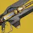 | 特殊弹药追踪步枪 | 持续命中同一目标，同时生成精准笼 | 15%[7.5%] | 随命中持续 | 减益作用于目标整个身体，不限于精准笼覆盖的部位；神圣裁决自身另有 30% 加成。 精准笼可能盖住某些战斗人员本来就放大的精准判定框（例如泰肯），反而打出更低的伤害。 |
| 虚弱沙盒来源 | ||||||
| 深埋血脉 | 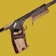 | 特殊弹药手枪 （需催化剂） | 吞食生效期间：命中施加虚弱 | 15%[7.5%] | 5 秒[2.5 秒] | |
| 集体义务 | 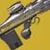 | 主武器脉冲步枪 | 已吸取虚弱并切到副射击模式：命中施加虚弱 | 15%[7.5%] | 10 秒[5 秒] | 吸取更强的易伤会被折算成标准虚弱。 例：吸取牵引器火炮的 30%［50%］，放出来仍是 15%［7.5%］。 |
| 命定混沌 | 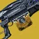 | 威能机枪 | 每第 4 发重金属弹施加虚弱 | 15%[7.5%] | 6 秒[3 秒] | |
| 心影 | 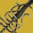 | 威能刀剑 | 重攻击命中施加虚弱 | 15%[7.5%] | 6 秒[3 秒] | |
| 英勇利刃 | 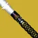 | 特殊弹药刀剑 | 装备虚空超能时：近战命中、弹反命中或远程命中 | 15%[7.5%] | 6 秒[3 秒] | |
| 杀手之牙 | 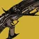 | 特殊弹药霰弹枪 | 夜誓之视生效期间：子弹丸施加虚弱 | 15%[7.5%] | 6 秒[3 秒] | |
| 细分曲面 | 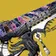 | 特殊弹药融合步枪 （需催化剂） | 装备虚空手雷时：消耗手雷的蓄能射击施加虚弱 | 15%[7.5%] | 6 秒[3 秒] | 换成别的元素则施加对应的元素效果，例如烈日是灼烧。 |
| 三度迭代 | 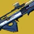 | 主武器斥候步枪 （需催化剂） | 融合弹的精准击杀扩散虚弱 | 15%[7.5%] | 6 秒[3 秒] | |
| 叛贼 | 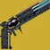 | 主武器手炮 | 释能状态下命中施加虚弱 | 15%[7.5%] | 6 秒[3 秒] | |
| 鬼神胸甲 | 猎人胸甲 | 在战斗人员附近脱离隐身时，在自身周围生成一团虚弱烟幕 | 15%[7.5%] | 10 秒[5 秒] | 烟幕在常态与超能状态下都能生成。 | |
| 凯布利之刺 | 猎人护臂 | 击杀已被虚弱的目标，在其死亡位置生成一团虚弱烟幕 | 15%[7.5%] | 15 秒[5 秒] | ||
| 第二次机会 | 泰坦护臂 | 圣盾投掷命中施加虚弱 | 15%[7.5%] | 10 秒[5 秒] | ||
| 炫火 | 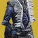 | 术士胸甲 | 精准击杀生成一片虚空范围效果，施加虚弱 | 15%[7.5%] | 6 秒[3 秒] | |
| 反转之握 | 术士护臂 | 蓄力手雷施加虚弱 | 15%[7.5%] | 6 秒[3 秒] | ||
| 邪冬的头盔 | 术士头盔 | 充能近战命中施加虚弱 | 15%[7.5%] | 6 秒[3 秒] | 充能近战与终结技的击杀施加的是上一节那条更强的减益。 | |
| 鬼灵利刃 | 虚空猎人超能 | 重攻击命中施加虚弱 | 15%[7.5%] | 6 秒[3 秒] | ||
| 陷阱炸弹 | 虚空猎人近战 | 烟幕弹伤害施加虚弱 | 15%[7.5%] | 8 秒[2.5 秒] | ||
| 伺机而动 | 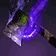 | 虚空猎人星相 | 击杀优先目标，使其炸成一团虚弱烟幕 | 15%[7.5%] | 6 秒[3 秒] | 穿过这团烟幕的使用者与盟友获得隐身。 |
| 潇洒行刑者 | 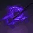 | 虚空猎人星相 | 由潇洒行刑者触发的隐身期间近战施加虚弱 | 15%[7.5%] | 5 秒[2.5 秒] | |
| 捕猎者的伏击 | 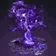 | 虚空猎人星相 | 装备隐身步法时：迅坠烟幕的伤害施加虚弱 | 15%[7.5%] | 10 秒[5 秒] | |
| 暮光军火 | 虚空泰坦超能 | 战斧超能命中 | 15%[7.5%] | 6 秒[3 秒] | 每次命中都会续期。 | |
| 黎明护罩 | 虚空泰坦超能 | 释放时的脉冲，以及罩内的战斗人员 | 15%[7.5%] | 6 秒[3 秒] | ||
| 新星折跃 | 虚空术士超能 | 暗影瞬移放出虚弱追踪弹 | 15%[7.5%] | 6 秒[3 秒] | ||
| 旧神之子 | 虚空术士星相 | 虚空之魂的汲取伤害施加虚弱 | 15%[7.5%] | 5 秒[2.5 秒] | 虚空之魂每次命中都会续期，汲取满 9.25 秒后消失。 | |
| 弱化回声 | 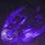 | 虚空碎片 | 虚空手雷的伤害施加虚弱 | 15%[7.5%] | 5 秒[2.5 秒] | 滞留型手雷会持续续期到最后一跳，例如尖刺手雷、涡流手雷的实际覆盖时间更长。 |
| 统御琢面 | 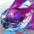 | 棱镜碎片 | 虚空手雷的伤害施加虚弱 | 15%[7.5%] | 5 秒[2.5 秒] | 滞留型手雷会持续续期到最后一跳。 装备统御琢面时，冰封奇点的虚空效果也会施加虚弱。 |
| 瓦解 | 虚空武器 Perk | 精准击杀引发一次虚弱爆裂 | 15%[7.5%] | 6 秒[3 秒] | ||
| 枯萎凝视 | 虚空武器 Perk | 开镜静止 1.5 秒（强化后 1.4 秒）填装一发虚弱弹 | 15%[7.5%] | 6 秒[3 秒] | ||
| 神器模组 | ||||||
| 弱化波 | 杀手公爵药剂师背包 | 装备虚空超能时：用终结技处决战斗人员，放出一道虚弱波 | 15%[无] | 6 秒 | 波形半径 15 米。 碾碎光能邪魔族的机灵同样触发。 | |
| 邪恶收割 | 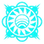 | 废墟石板 | 施加不稳定后，下一次虚空武器伤害放出一次虚弱爆裂 | 15%[15%] | 6 秒[3 秒] | 爆裂半径 7 米。 |
| 粒子重建 | 废墟石板 （仅融合与线性融合） | 融合步枪与线性融合步枪的伤害逐层叠加减益 | 1 层 5% 2 层 10.3% 3 层 15.8% 4 层 21.6% 5 层 27.6%[无] | 10 秒 | 30% 那一档的虚弱会覆盖粒子重建；神圣裁决的精准笼也会覆盖它，压回 15%。 | |
| 奇点利刃 | 加密数据盘 | 持有虚空增益（吞食、隐身、覆盖护盾）时：近战与刀剑命中 | 15%[7.5%] | 6 秒[3 秒] | ||
| 奇点利刃 | 加密数据盘 | 持有虚空增益时：近战与刀剑击杀扩散一次虚弱爆裂 | 15%[7.5%] | 6 秒[3 秒] | 爆裂半径 4 米。 | |
| 超新星 | NPA 斥力调节器或杀手公爵药剂师背包 | 拾取虚空裂口后 10 秒内的第一次虚空伤害放出一次虚弱爆裂 | 15%[7.5%] | 8 秒[3 秒] | 爆裂半径 5 米。 | |
| 虚空感染 | 加密数据盘 | 击杀已被虚弱的目标：放出虚弱追踪弹 | 15%[7.5%] | 6 秒[3 秒] | 追踪半径 15 米。 | |
| 削弱清敌 | 杀手公爵药剂师背包 | 用榴弹发射器击伤勇士、或打破护盾时施加虚弱 | 15%[无] | 20 秒 | 两次施加之间有 10 秒冷却；冷却结束后，任何虚弱来源都能为它续期。 | |
强化增益
| 名称 | 图标 | 来源 | 触发 | 增伤 | 时长 | 注解 |
|---|---|---|---|---|---|---|
| 技能 | ||||||
| 英杰圣盾 | 虚空泰坦超能 | 站在泰坦的英杰圣盾之后，获得光之武器 | 25%[35%] | 随圣盾持续 | 圣盾受到的伤害越多，消失得越快。 | |
| 光焰之井 | 烈日术士超能 | 站在井内 | 25%[约 60%] | 30 秒[30 秒] | 30 秒是井的基础时长，超能属性超过 100 后随之延长，200 时为 40 秒。 离开井后另获得 8 秒（装备抚慰余烬为 12 秒）的 20% 焕光。 | |
| 强能裂痕 | 术士职业技能 | 站在裂痕内 | 20%[15%] | 15 秒[15 秒] | 裂痕固定 15 秒，装备血红炼金术时击杀会暂停计时。 | |
| 焕光来源 | ||||||
| 烈焰之歌 | 烈日术士超能 | 释放超能 | 20%[10%] | 随超能持续 | 只为使用者提供焕光。 与战斗和谐护肩联动：烈焰之歌期间会激活护肩的激涌加成。 焕光同时使黄金枪与隐秘追猎的黄金枪伤害提高 20%。 | |
| 轻质飞刀 | 猎人充能近战 | 飞刀精准命中 | 20%[10%] | 10 秒[10 秒] | 只为使用者提供焕光。 | |
| 火焰润雨 | 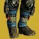 | 术士腿部 | 线性融合步枪或融合步枪击杀 | 20%[10%] | 7.5 秒[7.5 秒] | 只为使用者提供焕光；加成作用于全部武器，不限于那两类。 |
| 黎明琢面 | 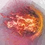 | 棱镜碎片 | 充能近战命中 | 20%[10%] | 4 秒[4 秒] | 只为使用者提供焕光。 |
| 光焰之井 | 烈日术士超能 | 离开井时获得焕光 | 20%[10%] | 8 秒[8 秒] | 为使用者与盟友提供焕光。 站在井内时拿到的是另一种增益，见上一节。 | |
| 特技闪身 | 烈日／棱镜猎人职业技能 | 使用职业技能 | 20%[10%] | 10 秒[10 秒] | 为 8 米内的全部盟友提供焕光；与飞升搭配时同样生效。 | |
| 火炬余烬 | 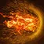 | 烈日碎片 | 充能近战命中 | 20%[10%] | 8 秒[8 秒] | 为 8 米内的全部盟友提供焕光。 |
| 黎明琢面 | 棱镜碎片 | 充能近战击杀 | 20%[10%] | 4 秒[4 秒] | 为 8 米内的全部盟友提供焕光。 | |
| 冥火之刺 | 术士腿部 | 在治愈裂痕内用武器击杀 | 20%[10%] | 7 秒[7 秒] | 为 8 米内的全部盟友提供焕光。 | |
| 异域装备 | ||||||
| 光之武器 | 虚空泰坦超能 （黎明护罩） | 站进黎明护罩 | 25%[25%] | 15 秒[15 秒] | 穿过护罩的盟友同样获得。 装备圣人 14 号的头盔时，离开护罩后仍保留 15 秒。 | |
| 流明·天空祝福 | 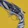 | 主武器手炮 | 击杀生成残响，拾取后最多可向盟友发射 6 发高尚弹药 | 35%[15%] | 11 秒[11 秒] | 高尚弹药会续期。 与汇编器战靴联动：战靴的追踪体直接并入流明。 |
| 矛隼胸甲 | 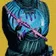 | 猎人胸甲 | 隐身状态下使用终结技 | 35%[无] | 6 秒 | PvP 里无法被终结，因此触发不了。 |
| 封印阿罕卡拉护手 | 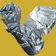 | 猎人护臂 | 充能近战或终结技击杀获得噩梦激励，为随后拔出的武器提供加成 | 35%[20%] | 7 秒[7 秒] | 再次击杀或换枪击杀都会续期，可一直循环到某次换枪没有击杀为止。 同时为收起的武器全部填装。 |
| 没有 B 计划 | 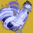 | 泰坦护臂 （仅霰弹枪） | 持有被动元素增益期间 | 35%[10%] | 随增益持续 | 只提高霰弹枪伤害，增益消失即失效。 被动元素增益： 增幅、恢复、虚空覆盖护盾 冰霜护甲、织造铠甲 |
| 危险推力 | 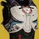 | 泰坦胸甲 （仅微型飞弹与爆炸物） | 用出逃火箭（职业技能）击伤目标，6 层为满 | 1 层 10% 2 层 17% 3 层 24% 4 层 33% 5 层 35%[35%] | 10 秒[10 秒] | 只作用于微型飞弹、火箭与榴弹发射器。 PvP 不逐层，恒为 35%。 |
| 天空祝福 | 术士腿部 （汇编器战靴） | 强能裂痕放出的高尚追踪体命中盟友 | 35%[15%] | 5 秒[5 秒] | 追踪体每次命中都会续期。 与流明联动：追踪体直接并入流明。 | |
| 虫神爱抚 | 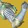 | 泰坦护臂 （对任意武器伤害生效） | 近战、偃月近战或终结技击杀叠加一层「燃烧之拳」 | 2 层 20%[无] 3 层 25%[20%] 4 层 30%[25%] 5 层 35%[25%] | 1 层 9.5 秒 2 层 10 秒 3 层 4 秒 4 层 4 秒 5 层 3 秒 | 1 层不提供加成，层数越高衰减越快。 「燃烧之拳」另外还提高近战与偃月近战伤害，那一份与易伤、近战增益各自叠加。 PvP 的衰减与 PvE 相同。 |
| 护甲模组 | ||||||
| 冲击雕文 | 门徒誓约电弧模组 | 用手雷击伤雕文 | 1 份 20% 2 份 25% 3 份 35% 4 份起 40%[无] | 15 秒 | 只提高脉冲步枪、机枪、手枪与微型冲锋枪的伤害。 仅在门徒誓约副本内生效。 | |
| 震慑雕文 | 门徒誓约烈日模组 | 用手雷击伤雕文 | 1 份 20% 2 份 25% 3 份 35% 4 份起 40%[无] | 15 秒 | 只提高榴弹发射器、手炮、火箭发射器与霰弹枪的伤害。 仅在门徒誓约副本内生效。 | |
| 扭曲雕文 | 门徒誓约虚空模组 | 用手雷击伤雕文 | 1 份 20% 2 份 25% 3 份 35% 4 份起 40%[无] | 15 秒 | 只提高自动步枪、线性融合步枪、斥候步枪与狙击步枪的伤害。 仅在门徒誓约副本内生效。 | |
| 尖刺雕文 | 门徒誓约冰影模组 | 用手雷击伤雕文 | 1 份 20% 2 份 25% 3 份 35% 4 份起 40%[无] | 15 秒 | 只提高弓箭、融合步枪、刀剑与追踪步枪的伤害。 仅在门徒誓约副本内生效。 | |
| 本影磨锐 | 门徒誓约模组 | 持有 4 层以上的弥漫暗影 | 1 份 20% 2 份 25% 3 份 35% 4 份起 40%[无] | 15 秒 | 对全部武器生效。 仅在门徒誓约副本内生效。 | |
| 神器模组 | ||||||
| 焕光能量球 | 猎人日志 | 装备烈日或棱镜分支职业时：拾取能量球 | 20%[10%] | 10 秒[10 秒] | 只为使用者提供焕光。 | |
| 发热寒颤 | 好奇之器与女王兰香炉 | 烈日武器连续精准命中 | 20%[10%] | 10 秒[10 秒] | 只为使用者提供焕光。 | |
| 烈焰之心 | 女王兰香炉 | 释放超能：为附近盟友提供焕光 | 20%[10%] | 10 秒[10 秒] | 为 15 米内的全部盟友提供焕光。 | |
| 棱镜转移 | 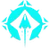 | 猎人日志 | 释放超能，为 25 米内超能元素与自己不同的盟友提供加成 | 20%[10%] | 10 秒[5 秒] | |
武器激涌
模组、异域装备与神器给的激涌共用同一套系统：同元素的激涌只取最高的一份，不同元素之间可以随意搭配。护甲模组的激涌与异域护甲触发的激涌各自独立计时。
Gambit 一律沿用 PvP 的数值与时长，对战斗人员与都是如此。
| 名称 | 图标 | 来源 | 触发 | 增伤 | 时长 | 注解 |
|---|---|---|---|---|---|---|
| 护甲模组 | ||||||
| 武器激涌模组 | 腿部护甲模组 | 持有至少 1 层护甲充能时：获得与模组元素匹配的加成，每份模组叠一层激涌 | 1 份 10%[3%] 2 份 17%[4.4%] 3 份 22%[5.5%] | 随护甲充能 | 时长随护甲充能层数变化，每层 10 秒（3 层即 30 秒）。 装备完全充能可把上限提到 4／5／6 层（6 层即 60 秒）。 装备时间膨胀可把每层的衰减拉长到 15／18／20 秒（3 层时间膨胀配 6 层充能即 120 秒）。 动能与烈日激涌不作用于黄金枪。 烈日激涌作用于隐秘追猎的狙击超能。 | |
| 异域装备：指定元素 | ||||||
| 永恒战士 | 泰坦头盔 | 约每 2 次电弧击杀叠 1 层，最多 4 层 | 1 层 10%[3%] 2 层 17%[4.4%] 3 层 22%[5.5%] 4 层 25%[6%] | 11 秒[6 秒] | 继续击杀可续期；击杀可以来自武器或技能，任意分支职业都能吃到这份递增。 | |
| 永恒战士 | 泰坦头盔 （需装备浩劫之拳） | 浩劫之拳超能结束时直接给满 4 层 | 25%[6%] | 30 秒[6 秒] | 继续电弧击杀可续期。 | |
| 毁灭之牙肩甲 | 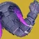 | 泰坦护臂 | 约每 2 次虚空击杀叠 1 层，最多 4 层 | 1 层 10%[3%] 2 层 17%[4.4%] 3 层 22%[5.5%] 4 层 25%[6%] | 11 秒[6 秒] | 继续击杀可续期；击杀可以来自武器或技能。 |
| 毁灭之牙肩甲 | 泰坦护臂 | 虚空充能近战击杀直接给满 4 层 | 25%[6%] | 11 秒[6 秒] | 继续虚空击杀或虚空充能近战击杀可续期。 | |
| 凋零游侠 | 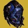 | 猎人头盔 （需装备电弧法杖） | 电弧法杖超能结束时给满 4 层 | 25%[6%] | 21 秒[16 秒] | 不可续期。 |
| 冰霜-EE5 | 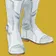 | 猎人腿部 | 持有任意层冰霜护甲期间 | 22%[3%] | 随冰霜护甲 | |
| 巴利道斯织怒工 | 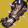 | 术士护臂 （需装备冰霜脉冲） | 施放冰霜脉冲裂痕，为自己与附近盟友给 2 层 | 17%[4.4%] | 11 秒[6 秒] | 不可续期。 |
| 巴利道斯织怒工 | 术士护臂 （需装备冰影超能） | 严冬之怒重攻击的冲击波为附近盟友给满 4 层 | 25%[6%] | 15 秒[6 秒] | 冲击波再次命中盟友可续期。 | |
| 巴利道斯织怒工 | 术士护臂 （需装备冰影超能） | 严冬之怒结束时为自己给满 4 层 | 25%[6%] | 11 秒[6 秒] | 不可续期。 | |
| 异域装备：匹配元素 | ||||||
| 觅敌者 | 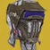 | 猎人头盔 | 用元素技能击中强力战斗人员或，给满 4 层，激涌元素与该技能一致 | 25%[6%] | 16 秒[11 秒] | 击中另一个未被标记的目标可续期。 强力战斗人员指橙血、初级首领、勇士与首领；技能伤害包括充能近战、手雷、超能与虚空／冰影／缚丝俯冲，裂空打击命中有 bug 不触发。 |
| 战斗和谐护肩 | 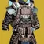 | 术士胸甲 | 超能蓄满时，用与超能同元素的武器击杀，给满 4 层 | 25%[6%] | 11 秒[6 秒] | 继续同元素击杀可续期。 |
| 血红炼金术 | 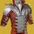 | 术士胸甲 | 站在任意裂痕或光焰之井内，给满 4 层，元素与施放时的超能一致 | 25%[6%] | 随裂痕持续 | 时长绑定裂痕或井（裂痕可被血红炼金术延长，井不行）；走出去或它们消失即失去加成，可重新获得。 |
| 战斗和谐护肩 | 术士胸甲 | 超能结束时，一次性给满电弧、烈日、虚空、冰影与缚丝五种激涌 | 25%[6%] | 10 秒[6 秒] | ||
| 棱镜之灵 | ||||||
| 永恒战士之灵 | 泰坦之灵 （第一列） | 超能结束时给满 4 层，元素与所装超能一致 | 25%[6%] | 30 秒[6 秒] | 不可续期，只在棱镜分支职业上生效。 | |
| 觅敌者之灵 | 猎人之灵 （第一列） | 用元素技能击中强力战斗人员或，给满 4 层 | 25%[6%] | 16 秒[11 秒] | 击中另一个未被标记的目标可续期，只在棱镜分支职业上生效。 冰雹尖刺只能触发冰影激涌；手雷在被标记目标身上留存时间不足，触发不了烈日激涌。 | |
| 神器模组 | ||||||
| 精准平等 | 加密数据盘 | 拾取由精准平等生成的能量球 | 17%[4.4%] | 11 秒[11 秒] | 任意元素的激涌。 | |
| 鲜弹芬芳 | 好奇之器 | 拾取弹药 | 17%[4.4%] | 11 秒[11 秒] | 动能激涌。 | |
| 虚空武器输能 | NPA 斥力调节器 | 至少有一个虚空技能充能完毕时：用虚空武器击杀 | 1 层 10%[3%] 2 层 17%[4.4%] 3 层 22%[5.5%] 4 层 25%[6%] | 11 秒[11 秒] | 层数按充能完毕的虚空技能数量给，多充能同样计数（两格近战即 4 层）。 | |
放大类增益
这一类与易伤、强化、激涌全都叠加，自身之间也叠加。
| 名称 | 图标 | 来源 | 触发 | 增伤 | 时长 | 注解 |
|---|---|---|---|---|---|---|
| 离群项 | ||||||
| 武器属性 | 角色属性 | 0–100 区间，非威能武器，只对与生效 | 每 +1 属性 +0.15% 100 时 15%[无] | 常驻 | ||
| 武器属性 | 角色属性 | 0–100 区间，威能武器，只对与生效 | 每 +1 属性 +0.1% 100 时 10%[无] | 常驻 | ||
| 武器属性 | 角色属性 | 101–200 区间，非威能武器，只对与生效 | 每 +1 属性 +0.15%[+0.05%] 200 时 15%[5%] | 常驻 | ||
| 武器属性 | 角色属性 | 101–200 区间，威能武器，只对与生效 | 每 +1 属性 +0.1%[+0.05%] 200 时 10%[5%] | 常驻 | ||
| 力量学派 | 永劫教派模组 | 3 秒内对、或勇士打出 4 次精准命中，或眩晕一个勇士 | 20%[无] | 30 秒 | 不可续期，对无效。 这一份减益自成一类，与其它全部增益、易伤都叠加。 | |
| 远程护盾 | 玄武行动之刃 | 防护护盾为自己与盟友提高武器伤害 | 5%[5%] | 10 秒[10 秒] | 再次穿过护盾可续期。 | |
| 领航员 | 特殊弹药追踪步枪 | 持有织造铠甲期间 | 25%[5%] | 常驻 | ||
| 杀手之牙 | 特殊弹药霰弹枪 | 固有：对堕落者与背弃者的伤害提高 | 10%[无] | 常驻 | ||
| 焚天者誓约 | 主武器斥候步枪 | 固有：对卡巴尔的伤害提高 | 18%[无] | 常驻 | ||
| 维王者之剑 | 特殊弹药偃月 （泰坦专属） | 固有：对 Vex 的伤害提高 | 25%[无] | 常驻 | ||
| 巴克里斯面具 | 猎人头盔 （需装备电弧或冰影超能） | 使用凌光偏转（职业技能）叠一层，最多 3 层 | 1 层 10%[10%] 2 层 21%[21%] 3 层 33%[33%] | 11 秒[11 秒] | 只作用于电弧与冰影武器，以及狼王。 | |
| 亚克兴角战役钻机 | 泰坦胸甲 | 自动步枪或机枪击杀叠一层，最多 10 层 | 每层 1.6%[1.6%] | 随层数 | ||
| 燃烧舞步之道 | 泰坦腿部 （需装备咆哮烈焰） | 咆哮烈焰的层数提高烈日武器伤害，最多 3 层 | 1 层 6%[6%] 2 层 9.2%[9.2%] 3 层 12.4%[12.4%] | 随咆哮烈焰 | 另提高点燃伤害： 1 层 5% 2 层 10% 3 层 15% | |
| 动能固有加成 | 特殊弹药武器 | 固有：动能特殊弹药武器的基础伤害高于同类元素武器 | 15%[无] | 常驻 | 对无效。 对、勇士、、与多数载具生效。 | |
| 动能固有加成 | 主武器 | 固有：动能主武器的基础伤害高于同类元素武器 | 10%[无] | 常驻 | 对无效。 对、勇士、、与多数载具生效。 | |
| 神器模组 | ||||||
| 电弧复合 | 杀手公爵药剂师背包 | 对被致盲的目标造成电弧伤害 | 15%[7.5%] | 随致盲持续 | 对全部档位的战斗人员生效，但闪光手雷无法在首领身上触发。 只有致盲触发这一条，迷失类效果不触发。 | |
| 银白利刃 | 猎人日志 | 持有护甲充能时：用刀剑造成伤害 | 15%[15%] | 5 秒[5 秒] | ||
| 银白重炮 | 女王兰香炉 | 持有护甲充能时：开火箭发射器，消耗一层换取弑神弹头 | 15%[15%] | 4.5 秒[4.5 秒] | 增益生效期间不再继续消耗护甲充能。 | |
| 银白箭袋 | 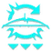 | 好奇之器 | 持有护甲充能时：填装弓箭，获得 3 层弑神箭簇 | 主武器 35% 威能弹药武器 25%[无] | 随层数 | |
| 组合银白利刃 | 加密数据盘 | 攻击、停顿、再攻击 | 15%[15%] | 5 秒[5 秒] | 不可续期。 | |
| 元素超驰 | 好奇之器 | 拾取元素拾取物 | 22%[5.5%] | 7 秒[7 秒] | 界面写的是激涌加成，实际不是——它与全部增益叠加。 | |
| 扩展深渊 | 猎人日志 | 提高虚弱效果本身的数值 | 15% → 25% 30% → 35% 35% → 40%[7.5% → 10%] | 随虚弱持续 | 只作用于虚空伤害，对神圣裁决无效。 | |
| 严酷折射 | 废墟石板 | 追踪步枪对承受同元素减益的目标伤害提高，缩影对任意元素减益都吃满 | 传说 50%[50%] 异域 35%[35%] 缩影 20%[20%] | 4 秒[4 秒] | 元素减益： 电弧：致盲、震颤 烈日：灼烧 虚空：压制、不稳定、虚弱 冰影：减速、冻结 缚丝：割裂、悬停、瓦解 | |
| 狙击手冥想 | 加密数据盘 | 狙击步枪直击命中叠层 | 1 层 2.8% 2 层 5.7% 3 层 9% 4 层 12% 5 层 15%[无] | 7 秒 | 可续期。 同时提高稳定性与填装速度。 | |
| 单人特工 | 女王兰香炉 | 单人游戏时精准击杀叠层，层数无上限 | 每层 1.2%[无] 25 层即 30% | 5 秒 | ||
| 瞄准自动填装器 | 猎人日志 | 装备自动步枪时击杀战斗人员 | 1 层 10% 2 层 13% 3 层 16% 4 层 18% 5 层 20%[无] | 15 秒 | ||
| 火炬 | 女王兰香炉 | 焕光期间，对承受冰影或缚丝减益的目标 | 每层 1.2%[无] 25 层即 30% | 5 秒 | 生效的减益： 冰影：减速、冻结 缚丝：割裂、悬停、瓦解 | |
世界与活动
这一类由活动本身给出，与前面四类全部叠加，自身之间也叠加。这一类只有图示清单、没有逐条数值，下面是其中与伤害有关的几条规则。
- 超载武器
- 神器上的武器专精 Perk 与勇士克制词条会让对应武器进入超载状态，伤害提高 25%；分支职业元素与活动激涌匹配时，动能武器同样进入超载。
- 活动激涌
- 电弧、烈日、虚空、冰影与缚丝五种，伤害提高 25%。
- 两者不叠加
- 超载与活动激涌同时满足也只结算一次 25%。例：烈日激涌配融合步枪超载，Vex 揭秘者只吃到一份 25%。
- 与护甲激涌可叠加
- 活动激涌与护甲激涌分属两类。例：腿部护甲或异域装备给的烈日激涌，与活动的烈日激涌叠加。
- 自带勇士克制的异域武器例外
- 这类武器不吃超载加成。例：装备势不可挡弓箭时，利维坦之息拿不到超载增益。
- 其余来源
- 遭遇战增益（突袭与地牢）、活动修正词条与众神殿的职业战争、射击号令等，数值随活动而定。
叠加算例
各类增益之间一律相乘，把每一项的倍率乘起来即可。
| 武器 | 修正 1 | 修正 2 | 修正 3 | 修正 4 | 修正 5 | 修正 6 | 合计 |
|---|---|---|---|---|---|---|---|
| 冰影火箭发射器（例如无效安慰） | 爆炸光能 25% | 冰影护甲激涌 3 层 22% | 冰影活动激涌 25% | 巴克里斯面具 3 层 33% | 暗影箭矢：狩猎陷阱 35% | 光焰之井 25% | 约 328%（约 4.28 倍伤害） |
1.25 × 1.22 × 1.25 × 1.33 × 1.35 × 1.25 ≈ 4.28，即在原伤害之上再多出约 328%。六项分属武器 Perk、武器激涌、世界与活动、放大类、全局易伤与强化增益六个不同类别，所以能同时生效。